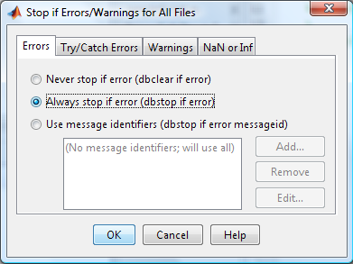
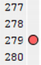
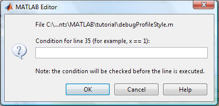
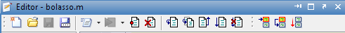
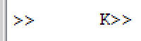
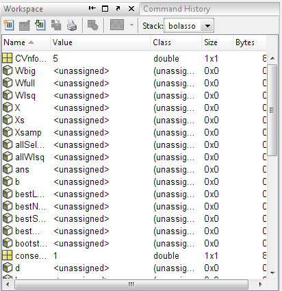
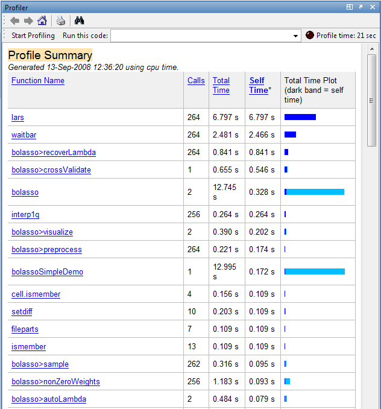

Debugging, Profiling, & Style Guidelines
Matlab code is very flexible, particularly with respect to its dynamic typing, however, this can also lead to enormous headaches when it comes time to debug a crashing program. You may have overwritten or misspelled an important variable without knowing it, or inadvertently expanded the size of your matrix, and Matlab will happily continue executing without warning until your program grinds to a halt. Trying to discover the original problem that started dozens of lines before or in another function is not always easy.
In this section, we describe a number of tools and techniques that can help as well as ways to assess the speed of your code and find potential bottlenecks. We finish by discussing a few stylistic points and best practices that can make your code more readable and less prone to bugs in the first place.
Contents
Debugging
Here are some useful functions which we will explain below
%dbstop, dbquit, dbclear, dbstep, dbstep nlines, dbstep in, dbstep out, %dbcont, dbstatus, keyboard, workspace
M-lint Warnings & Errors
Matlab automatically checks for certain problems and suggests fixes as you edit your m-files. The problem code is underlined in red much like word processors underline misspelled words. It is worthwhile paying attention to these as they can often point out problems before you run your code and frequently suggest ways to speed up execution. The suggestions appear when you hover your mouse over the underlined text, and you can quickly find these spots by looking for the red markers to the right of the document. The warnings and errors M-lint warns you about can be set under File->Preferences->M-lint.
In newer versions of Matlab, you can generate a full M-lint html report by going to Tools->Save and Show M-lint Report. You can also bring up a file dependency report or compare two versions of a file from the Tools drop down menu.
Stop! if Errors/Warnings...
If your program is crashing or displaying cryptic warnings, it is very useful to have it automatically halt execution right at the point where it ran into trouble. Type dbstop if error and dbstop if warning. Or you can use the GUI: Select Debug --> Stop if Errors/Warnings to turn this on, as shown below.

Break Points
Break points can be set at any line in the document that executes code by pressing just right of the line number. A small circle will appear and will turn red when the file is saved.

These can be temporarily disabled by right clicking on them and selecting disable. To clear them all, type dbclear all or press the equivalent tool bar button.
You can set a condition on the breakpoints so that it is only triggered if a variable takes on a certain value, by right clicking on the variable and selecting 'Set/Modify Condition'.

Once your code has stopped at a breakpoint, you can step one line at a time, continue on until the next break point, or exit debug mode completely using the tool bar buttons at the top of the editor.
The step in and step out buttons, let you enter into, or leave a function called at the current line.

There are function equivalents to these commands if you prefer, namely dbstep, dbstep nlines, dbstep in, dbstep out, dbcont, and dbquit. The dbstop() function can be used to set breakpoints and the dbstatus() function displays all of the breakpoints currently set. You can save these into a variable as in s = dbstatus(), clear the breakpoints and then reset them at a later point with dbstop(s).
When you are in debug mode, the command window prompt will look slightly different: it will have a k in front.

The keyboard() function can also be used to stop execution of a program, temporarily relinquishing control back to the command window. Simply add the line keyboard anywhere in your file to stop at that point. To return execution, type return.
Variable Stacks
Once execution has stopped because of a break point or keyboard() command, you can inspect the current values of the variables by just typing their name, as usual. Or you can open a GUI by typing workspace. Typically functions call other functions, and the variables get pushed on the stack. To change stackframes, use dbup or dbdown, or click the stack bottom on the GUI.

You can also execute commands at the command prompt while execution has stopped, and assign new values to existing variables.
Profiling & Timing Code
We have already seen the tic() and toc() functions, which can be used to time how long your code takes to run. Simply run tic() before your code and toc() after. Matlab, however, has a much more powerful framework, called profiling, which gives you a detailed report about how long was spent executing each subfunction. You can use this report to find bottlenecks that you might be able to improve.
You can turn on profiling with the profile on command and turn it off again with profile off. Once profiling is on, execute your code, and then type profile viewer to see the report.

The report shows a breakdown of all the functions called from your function, the number of times they were called, and the total time spent executing them. Self-time, denoted by a dark blue band, is the the time spent within a function not including how long was spent in functions called from here. This is really the statistic you should pay attention to. You can click on a function name to bring up its sourcecode.
Guidelines on programming style
Writing your code in a clear fashion can help you find bugs, and makes it easier for other people to read and modify. Programming style, like writing style in general, is something you learn over time, mostly by immitating good examples. There are lots of good books with suggestions on programming style. Some Matlab-centric advice can be found in Richard Johnson's_ Programming Style Guidelines. We summarize some of these suggestions below. In addition, we include some concrete examples from Henry Ledgard's 1984 book, Guidelines on programming practice. The examples in his book are in Pascal, but the principles are the same.
Layout
The layout of your code is one of the simplest ways to improve clarity. Use indentation to denote scope, indenting the code in function bodies, and further indenting the code within loops, switch statements, try/catch blocks as well as nested functions. (Most editors will do this automatically.)
Include spaces around operators like ||, &&, ==, etc and consider breaking long commands into multiple lines by using ellipses, (...). Keep lines to less than say 80 characters long and be consistent throughout.
Align variables and values by equal signs and commas to show parallel structure, as in this example.
plot(Xequal,f(Xequal), 'o' ,'MarkerFaceColor' , 'g'...
,'MarkerEdgeColor' , 'k'...
,'LineWidth' , 2 ...
,'MarkerSize' , 10);Example of Good and Bad program layout
Below we give an example from Henry Ledgard's 1984 book, Guidelines on programming practice, of mediocre (left) and good (right) program layouts. It is clear that the layout on the right is preferable: it makes the structure and meaning of the program much clearer, mostly by the more generous use of whitespace, and by grouping together conceptually related pieces of code. (The local procedure SETMONTHNAMES has been removed from the figure on the right to make the comparison easier.)
| Mediocre Layout | Good Layout |
|---|---|
 |
 |
Comments
Matlab's commenting conventions are discussed here. It is often thought that 'good style' means lots of comments. This is rarely true: comments often go 'stale', meaning they become inconsistent with the way the code actually works. It is best to try to make your code 'self documenting' by judicious choice of names, good organization and layout, etc. Save comments for obscure things, like vectorization tricks. Of course, there should be a comment at the start of every function, so that help has something to print.
Example of Good and Bad comments
Below we give an example from Henry Ledgard's 1984 book, Guidelines on programming practice, of bad (left) and good (right) comments. The purpose of the function is irrelevant. The point is that the good comments are substantive --- they include examples of what a function should do, and discuss exceptional cases. The bad ones are 'dribbling': unstructured prose that goes on and on.
| Bad comments | Good comments |
|---|---|
 |
 |
Names
It is important to pick names that are meaningful, even if that makes them long. Here are some tips.
- We recommend you use camel back notation, as in hiddenMarkovModel. CamelBack always starts with a lower case letter, and then uses an upper case letter for each new word. Acronyms, such as GaussianHMM, also follow this convention, so would be written as gaussianHmm.
- Capitalize constant variables whose values will not change. Capitals are also often used to denote class definitions.
- Use verbs for function names, and nouns for variable/ constant names.
- Prefix logical functions (predicates) with is as in isfinite().
- Do not use any magic numbers, i.e. constant values appearing out of nowhere. Rather, assign these values to variables with descriptive names and use these instead.
- Short, single letter variables should only be used in one of three cases: where the structure of the algorithm is important, as in a mathematical derivation; for local temporary variables such as loop indices; or when well defined conventions exist. In all of these cases, document their meaning through comments.
- Prefix variables denoting a number of elements with the letter n as in nvalues for the number of values.
- Suffix variables storing indices with NDX as in dataNDX
- Use i,j,k for loop variables.
- Be consistent with pluralization for non-scalar data, i.e. pick one of value(j) or values(j) and use that convention throughout.
- Resuse variables names only when the data is related and even then, with caution. It can be very confusing when a variable you have been tracing through a program suddenly changes role.